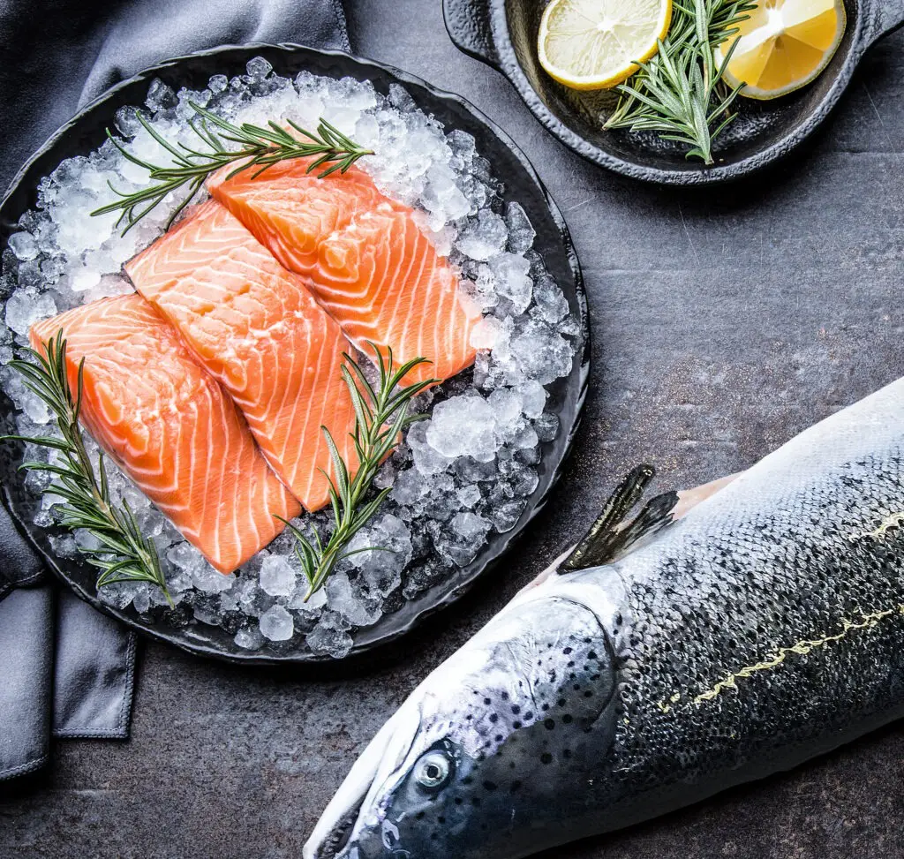

☰
Home
my recipes
Crispy Salmon Bites
Honey Garlic Glazed Salmon
Shoyu Salmon Poke
og cookahs
not a chef
The Chunky Chef
i made this one
salmon is the best. here's different ways to make it.
if you think otherwise, you are otherwise.
